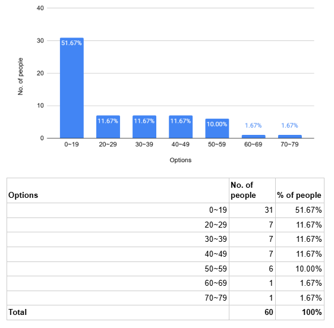
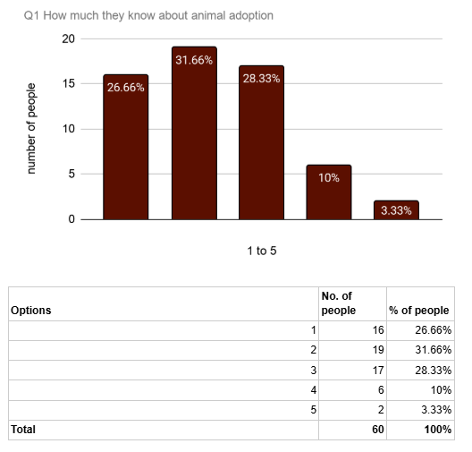
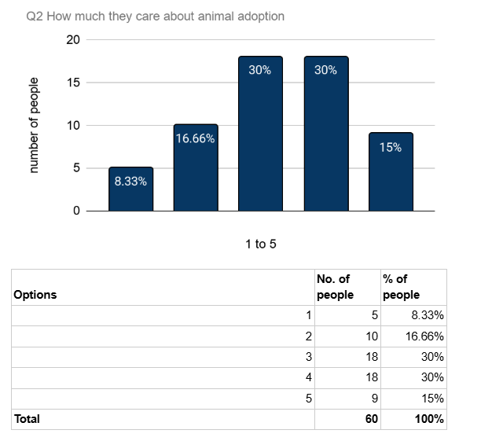
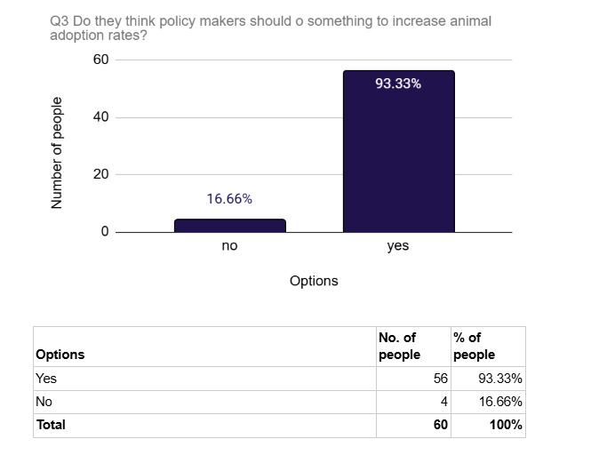
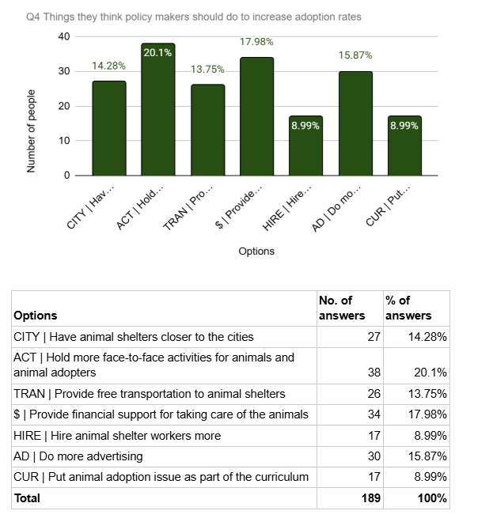
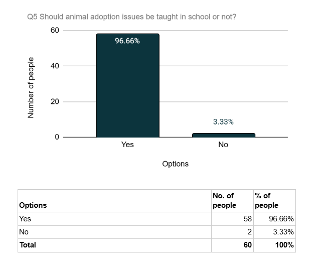

Data ⭑.ᐟ
Result: Sample Overview
Our group asked 60 people to answer our survey question. Among them, the majority of respondents were aged 10-19, 52%. Only one person in each of the 60-69 and 70 and above age groups answered our survey.
We interviewed 60 people in total. Most of the respondents were aged 10–19, making up 52% of all participants. This was the largest age group in our survey. In comparison, only one person aged 60–69 and one person aged 70 or above took part in the survey. Therefore, the survey results mainly show the opinions of younger people on animal adoption.

Question 1:On a scale of 1-5, how much do you know about animal adoption? (with 1 being a little and 5 being a lot)
In question 1 we’re asking about how much they know about animal adoption issues.
This is a single-choice question, and it collects categorical data.
I use bar gragh for this question because I want to show the number and the percent of the people at
the same time.
In this question: Option 1 means not knowledgeable at all.Option 2 means slightly knowledgeable. Option 3 means moderately knowledgeable. Option 4 means very knowledgeable. Option 5 means extremely knowledgeable
According to the data in question 1, the category with the highest frequency overall is option 2 at 32%, which means the majority of the respondents know a little about animal adoption.

Question 2:On a scale of 1-5, How much do you care about animal adoption? (with 1 being a little and 5 being a lot)
In question 2 we want to know how people care about animal adoption issues.
This is a single-choice question, and it collects categorical data.
I use bar gragh for this question because I want to show the number and the percent of the people at
the same time.
In this question: Option 1 means don't care at all. Option 2 means care a little. Option 3 means moderately care. Option 4 means care a lot. Option 5 means care very much.
According to the data in question 2, the categories with the highest frequency overall are option 3 and 4 both at 30%, which means the majority of the respondents care about animal adoption.

Question 3:Do you think policy makers should try to increase animal adoption rates?
In question 3 we want to know many people think policy makers should or shouldn’t increase animal
adoption rates
This is a single-choice question, and it collects categorical data.
I use bar gragh for this question because I want to show the number and the percent of the people at
the same time.
I also add a side-by-side bar gragh for this question to show the age group.
According to the data in question 3, the category with the highest frequency overall is option yes at 93%, which means the majority of the respondents think policymakers should try to increase animal adoption rates.

According to the side-by-side bar gragh, most people who chose no are teenagers, even though many of
them chose yes.
It shows maybe teenagers don't think increase
animal adoption rates is important than middle-aged people.

Question 4:What do you think policy makers should do in order to increase animal adoption rates?(Multiple selections possible)
In question 4 we're asking them what thing they think policy makers
should do to increase animal adoption rates.
This is a multiple selection question, and it collects
categorical data.
I use bar gragh for this question because I want to show the number and the percent of the people at
the same time.
According to the data in question 4, the category with the highest frequency overall is category ACT,
holding more face-to-face activities for animals and animal adopters, at 63%, which means the majority
of the respondents think holding more face-to-face activities for animals and adopters can increase
adoption rates.

Question 5:Do you think animal adoption issues should be taught in school?
In question 5 we want to see if people support animal adoption issues add in curriculums.
This is a single-choice question, and it collects categorical data.
I use bar gragh for this question because I want to show the number and the percent of the people at
the same time.
I also add a side-by-side bar gragh for this question to show the age group.
According to the data in question 5, the category with the highest frequency overall is option yes at 97%, which means the majority of the respondents think policymakers should put animal adoption into the education curriculum to increase animal adoption rates.

According to the side-by-side bar gragh, most people who chose no are teenagers.
It shows that maybe teenagesr don't think animal adoption issus is that important to taught in
school.